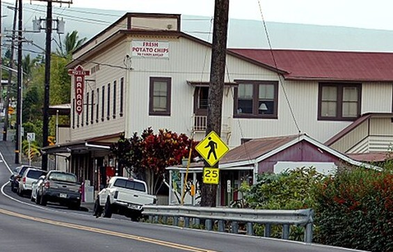

Manago Hotel
Place: Manago Hotel, Captain Cook, South Kona, Hawaiʻi Island
Type: Historic hotel and restaurant
Namesake: Kinzo and Osame Manago, Japanese immigrants who opened a small coffee shop and boarding house in 1917
Story it tells: How an immigrant family's two-room home grew alongside Kona's coffee industry and became one of Hawaiʻi's most enduring local institutions.

Along Māmalahoa Highway in Captain Cook stands a plain, three-story building that looks nothing like the resorts along the Kona coast. The Manago Hotel took a different path for its customers. For more than a century, the Manago Hotel offered modest rooms, home-style food, cool South Kona breezes, and a slower pace to enjoy your temporary retreat.
The hotel is named after Kinzo and Osame Manago, whose unlikely journey to South Kona began thousands of miles away. Kinzo reportedly left Japan intending to travel to Canada and study English. During a stop in Honolulu, however, a traveling companion gambled away their money. Stranded in the islands, Kinzo traveled to Hawaiʻi Island, where he hoped to locate a relative and find employment.
Kinzo initially expected to work in the sugar industry, as thousands of Japanese immigrants had done before him. He took a different path. Kinzo spent years chopping firewood and also worked as a cook for the Wallace family in South Kona.
Osame arrived from Fukuoka in 1913 as a picture bride, one of thousands of Japanese women who came to Hawaiʻi to marry men they knew primarily through photographs and letters. She and Kinzo reportedly met for the first time at the Honolulu immigration station and married soon afterward.
Their early life together reflected the difficult circumstances faced by many immigrant families. Osame sorted coffee beans for the Captain Cook Coffee Mill, embroidered linens, and completed other jobs to supplement their income. She even collected horse manure to fertilize the land. Their labor placed them directly within the agricultural economy of South Kona, where small coffee farms, mills, stores, and family businesses stretched along the slopes above Kealakekua Bay.
The Manago's business grew gradually and almost accidentally from a small home.
In 1917, Kinzo's employer recognized his ability as a cook and encouraged him to open a coffee shop. He loaned Kinzo $100 for a stove and kitchen equipment. Kinzo and Osame opened a small eatery in their two-room home, serving coffee, homemade bread, jam, udon noodles, and other simple food to residents and travelers.
Its location proved important. Captain Cook sat along the principal overland route through South Kona, and many regularly stopped for meals. Some arrived too tired to continue their journeys and began asking whether they could remain overnight.
Osame made space where she could. Travelers slept on cots, tatami mats, or futons, usually paying between fifty cents and one dollar for lodging. What began as an informal convenience became a boarding house, and the boarding house, over time, gradually became a hotel.
They expanded their home as their family and business grew. A second story was added, followed by more rooms and additional structures.
During World War II, the hotel became part of the local war effort. The military occupied nearby Konawaena School, and the Manago family was contracted to prepare meals for soldiers stationed in the area. Their kitchen reportedly operated around the clock, feeding troops while the war disrupted the lives and livelihoods of Japanese American families throughout Hawaiʻi.
In 1942, Kinzo and Osame retired and their son Harold Manago and his wife, Nancy took over. Harold managed the hotel for more than four decades and oversaw its transformation from a simple roadside boarding house into a larger mid-century hotel.
After the war, Harold acquired neighboring parcels and developed a modern three-story wing. Its 42 rooms included private bathrooms and lanais, with higher floors providing increasingly broad views of the Kona coastline. The property retained its older, more affordable rooms, allowing travelers to choose between basic shared-bath accommodations and the relative comfort of the newer wings.
Harold and Nancy also created landscaped grounds, a Japanese garden, and a koi pond. A specially designed Japanese room included tatami mats, a futon, and a traditional furo, or soaking tub, preserving a connection to the family's cultural heritage and provided a unique hospitality experience to the area.
Even as the hotel expanded, it remained intentionally simple. Rooms were known for lacking televisions, telephones, and air conditioning. Ceiling fans and open windows allowed the cooler air of South Kona's uplands to circulate. The absence of modern amenities became part of the hotel's identity, preserving the atmosphere of an earlier era of interisland travel.
The restaurant ultimately became as important as the hotel itself. Generations of customers came for local breakfasts, fresh fish, and traditional comfort food, but the best-known dish was the Manago Hotel's pork chops.
The thin pork chops were cooked in heavily seasoned cast-iron skillets that had prepared thousands of meals over many decades. Served with onions and simple local side dishes, they became inseparable from the restaurant's reputation.
The restaurant's food was never intended to be elaborate. Its appeal came from consistency, affordability, and the familiarity of meals served much as they had been for generations. Farmers, workers, families, and visitors ate together in a dining room that felt less like a tourist attraction than a long-running community gathering place or cafeteria.
In 1984, Harold and Nancy's son Dwight Manago and his wife, Cheryl, became the third generation to run the family business. They continued balancing the hotel's increasing reputation among travelers with its long-standing role in the local community.
While large resorts transformed the economies of Kailua-Kona and the Kohala Coast, the Manago Hotel remained inexpensive and largely unchanged. Its operators deliberately kept rates and restaurant prices accessible to local residents.
The family also credited the hotel's longevity to employees who remained for decades and were treated as part of an extended Manago family. Later generations, including Dwight and Cheryl's daughters, became involved in a business.
National recognition arrived in 2023, when the James Beard Foundation named the Manago Hotel Restaurant one of its America's Classics. The award honors long-standing, locally owned restaurants that reflect the character of their communities. For the Manago Hotel, it recognized an institution created by immigrant labor and sustained by more than a century of family and community support.
After four generations of family operation, the Manago family placed the property for sale. The hotel portion closed while the family sought a buyer, although the restaurant continues operating.
Whatever happens next, the Manago Hotel's importance extends beyond the survival of a business. Its buildings preserve the story of Japanese immigration, picture brides, Kona coffee, early travel, wartime service, family labor, and an older form of Hawaiʻi hospitality built around affordability.
The hotel did not begin through a major investment or an ambitious tourism plan. It grew because hungry travelers stopped for noodles and coffee, tired drivers asked for somewhere to sleep, and Kinzo and Osame Manago repeatedly made room for them.
More than a century later, their family name remains attached to one of South Kona's most recognizable landmarks. The Manago Hotel demonstrates how an ordinary home, built and expanded through hospitality, can gradually become part of the identity of an entire community.